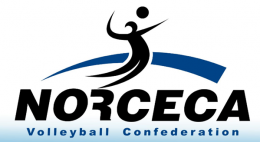

NORCECA: (Confederación Norte, Centroamérica y el Caribe de Voleibol), es una organización sin fines de lucro, responsable de todas las actividades de voleibol que se realicen en su zona. Es la confederación continental que representa a sus 35 países miembros de la Federación Internacional de Voleibol (FIVB). La Confederación es responsable de, entre otras cosas, los campeonatos clasificatorios para los Juegos Olímpicos y campeonatos mundiales, así como los campeonatos continentales para hombres y mujeres y el voley playa.